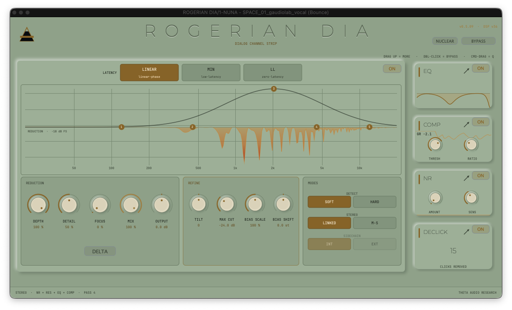
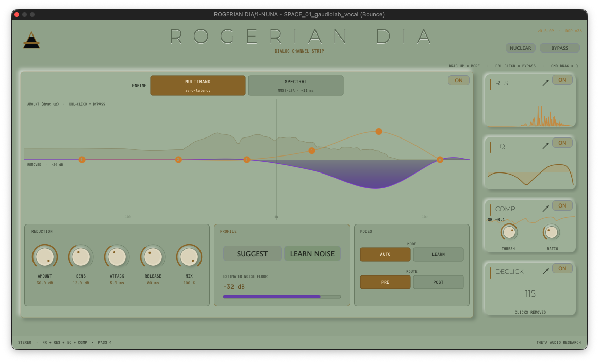
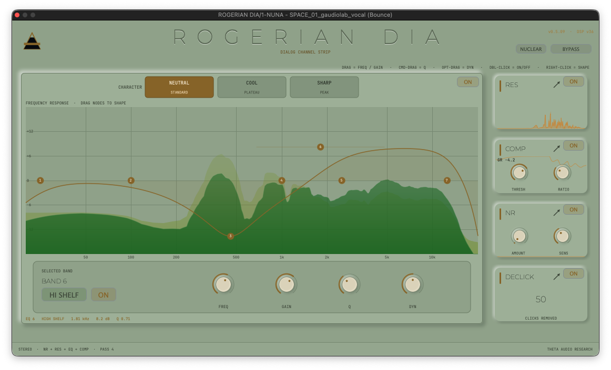
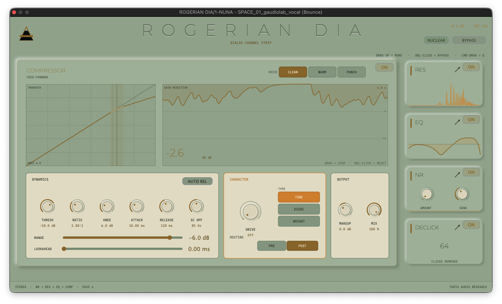
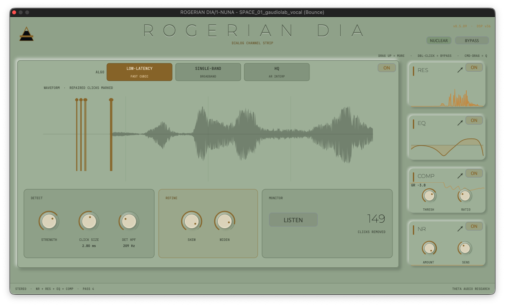

Noise reduction, resonance suppression, equalization, compression and de-click — five stages engineered as one instrument for the spoken voice. ROGERIAN DIA finds what's wrong only when it's wrong, and leaves the performance alone. Mono-first. Fully latency-reported. VST3 · AU · AAX · Standalone for macOS, in a signed and notarized installer.
The entire dialogue chain. One plugin. Register your identity below for immediate system deployment parameters and trial authorization frameworks.
BUY_ROGERIAN_DIATHE_OVERVIEW
ROGERIAN DIA is a dialogue-first channel strip: five cleanup and shaping stages in one mono-centric processor, tuned end to end for the human voice. Noise reduction → Resonance suppression → EQ → Compression, with a dedicated De-Click stage for the mouth itself.
It replaces the stack of separate plugins an editor reaches for on every line of dialogue — a denoiser, a dynamic resonance tool, a corrective EQ, a leveler, a de-clicker — with one focused signal path. No juggling five windows, five latencies, five vendors, and the interactions between them. One pass, one instrument, designed as a whole.
The name is the philosophy. Rogerian (person-centred) therapy is non-judgmental and reflective: it listens first, and it never imposes. That is exactly how this processor treats a signal — it reflects the voice back, cleaner, with no character of its own unless you ask for one.
THE_PROBLEM_IT_SOLVES
Spoken-word audio rarely has one problem. A single take can carry hiss and room tone, a ringing room mode, mouth clicks, a tonal imbalance, and uneven level — all at once. Cleaning it conventionally means chaining four or five plugins, each with its own window, its own latency, its own CPU bill, and its own idea of what a voice is — then fighting the interactions between them.
ROGERIAN DIA collapses that chain into one signal path designed specifically for voice: mono by default, transparent until you ask it to work, and honest with your DAW about every sample of latency it uses.
THE_FIVE_STAGES

The floor, lowered — continuously.
A real broadband denoiser for hiss, room tone and hum — not a gate, not an expander with a marketing name. ROGERIAN DIA's noise reduction tracks the noise floor continuously using minimum-statistics estimation: it watches roughly a second of spectral history and follows the floor as it drifts — air-conditioning that cycles, room tone that changes across a scene — with no noise print and no learn step required. Set the amount, set the sensitivity, and it simply keeps up.
- · Dual Engines — Zero-latency multiband path for tracking and picture work. High-resolution spectral tier (MMSE-LSA with speech-presence steering) for surgical dialogue restoration without watery artifacts.
- · Transparent Routing — The stage is routable in the chain and bit-transparent completely off. Amount and sensitivity controls do exactly what they claim.
Cuts that exist only while the problem does.
Every room rings somewhere. Every voice, some days, bites. The resonance stage is a dynamic, cut-only spectral processor that finds narrow resonances — boxiness, harshness, ring, proximity build-up — and attenuates them only while they sound, at the depth they demand, then gets out of the way. Nothing is notched permanently.
- · Soft / Hard — Adaptive tracking relative to voice context, or absolute thresholds for surgical work.
- · Focus & Detail — Persistence weighting treats sustained rings but spares transient consonants.
- · Display Steering — Five draggable bands over a live spectrum. Drag up where rooms ring, pull down with Depth, modify the response via REFINE (scale, shift, tilt).
- · Delta Listen — Solo exactly what's being removed. The fastest honesty check in the plugin.
- · Reconstruction Paths — Switch click-free between Zero (near-zero latency), Linear (phase-perfect offline pass), and Natural (minimum-phase).

Seven bands. Three characters. Zero latency.
A seven-band parametric built on analog-matched filters: the bell you see at 12 kHz is the bell you get — magnitude matched to the analog prototype all the way up, with none of the high-frequency cramping of textbook digital EQ. Minimum-phase, zero-latency, and drawn over a real-time pre/post analyzer.
- · Full Shape Set — Bells, 12/24/48 dB-per-octave cuts, notches, tilts, band-passes.
- · Per-Band Dynamic EQ — Set a dynamic range and the band eases in only when the signal crosses its self-adjusting threshold. A de-esser, a mud ducker, a presence lift — each is one band, one gesture.
- · CHARACTER System — NEUTRAL (standard bell), COOL (flat-topped plateau for broad tonal moves without a hot spot), and SHARP (focused tight peak for bite without smear).

A voice leveler with its color on a separate knob.
Feed-forward and program-dependent, built around a smooth decoupled detector to hold a read at a consistent level without pumping or dulling consonants.
- · VOICE — Clean, Warm, or Punch dynamic temperaments.
- · CHARACTER — Separate color section. Drive controls Tube, Diode, or Bright saturations independently from gain reduction. Pre/Post routing enabled.
- · Continuous Detection — Peak to RMS blending, program-dependent auto-release, sidechain high-pass (20–400 Hz), and a hard RANGE floor. Lookahead runs up to 3.5 ms on a fixed automation-safe budget.
- · Metering — Live transfer curve alongside a scrolling GR meter so you see the last several seconds of leveling decisions.

The mouth, minus the mouth noises.
Clicks, ticks, lip smacks — the tiny transients that survive every other stage and cost editors hours of clip-gain surgery. Detection finds the click; repair is model-based: an autoregressive engine learns the voice from the audio around the defect and resynthesizes what should have been there, with a hybrid fallback interpolation that guarantees a clean join. Restoration-suite technique running inside the strip in real time.
- · Click Size — Scope the repair from single-sample ticks to fatter mouth events.
- · Sample-Accurate Reporting — Latency is reported exactly to the host, even when switching click sizes dynamically.
DESIGNED_AS_ONE_INSTRUMENT
Five stages are only a strip if they behave as one plugin — so ROGERIAN DIA is engineered suite-first.
One window, honest depth. The stages live as compact cards with live mini-metering — the EQ card draws its real curve, the compressor card its real gain reduction, the de-click card its catch count. Any card opens into its full panel; the signal path never leaves the window.
Latency, reconciled. Each stage reports exactly what it uses; the suite reconciles the chain and tells the host one true number. The resonance stage's Zero path and the zero-latency EQ keep the default footprint small enough for picture and tracking.
Transparent at rest. Disabled stages are bit-transparent — verified by null test, not by assumption. A fresh instance passes audio untouched until you ask for work. Per-stage bypass and whole-plugin bypass are both crossfaded and clickless.
THE_FINISH
- Porcelain Aesthetic Pale stone panels, a masthead cut into the surface like an inscription — engraved, not printed — with gold reserved strictly for the active parameters.
- Pure Typography Montserrat controls naming matrices, while JetBrains Mono ensures precise numerical tracking rendering uniformly across all structural OS displays.
TECHNICAL_SPECIFICATIONS
- Stages Matrix Noise Reduction · Resonance Suppression · EQ · Compression · De-Click
- Format Architectures VST3 · AU · AAX · Standalone [macOS Intel & Apple Silicon / Signed and Notarized]
- Latency System Fully reported; near-zero default paths; fixed-budget compressor lookahead (automation-safe).
- Build Version v0.5.08 / DSP v36